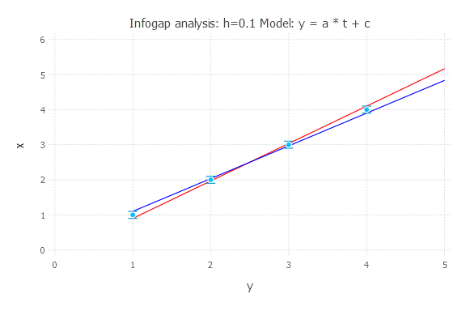
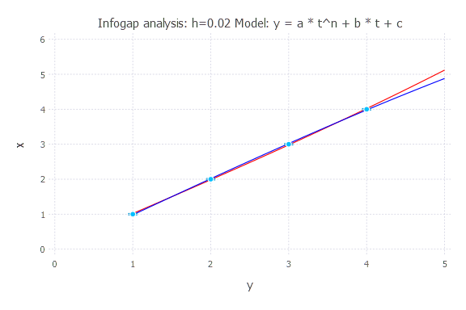

Information Gap Decision Analysis
MADS is applied to execute Information Gap Decision Analysis.
The analyses below are performed using examples/model_analysis/infogap.jl.
Setup

There are 4 uncertain observations at times t = [1, 2, 3, 4]
There are 4 possible models that can be applied to match the data
y(t) = a * t + cy(t) = a * t^(1.1) + b * t + cy(t) = a * t^n + b * t + cy(t) = a * exp(t * n) + b * t + c
There are 4 unknown model parameters with uniform prior probability functions:
a = Uniform(-10, 10)b = Uniform(-10, 10)c = Uniform(-5, 5)n = Uniform(-3, 3)
The model prediction for t = 5 is unknown and information gap prediction uncertainty needs to be evaluated
The horizon of information gap uncertainty
his applied to define the acceptable deviations in the 4 uncertain observations.Below we explore infogap of each model for different
hvalues.
Infogap in Model 1
Model: y(t) = a * t + c
h = 0.001

h = 0.01

h = 0.02

h = 0.05

h = 0.1

h = 0.2

h = 0.5

h = 1.0

Infogap in Model 2
Model: y(t) = a * t^(1.1) + b * t + c
h = 0.001

h = 0.01

h = 0.02

h = 0.05

h = 0.1

h = 0.2

h = 0.5

h = 1.0

Infogap in Model 3
Model: y(t) = a * t^n + b * t + c
h = 0.001

h = 0.01

h = 0.02

h = 0.05

h = 0.1

h = 0.2

h = 0.5

h = 1.0

Infogap in Model 4
Model: y(t) = a * exp(t * n) + b * t + c
h = 0.001

h = 0.01

h = 0.02

h = 0.05

h = 0.1

h = 0.2

h = 0.5

h = 1.0

Opportuneness and Robustness

Based on the figures above, the last model (y(t) = a * exp(t * n) + b * t + c) is associated with the largest infogap uncertainties.
It has the lowest robustness and highest opportuneness.